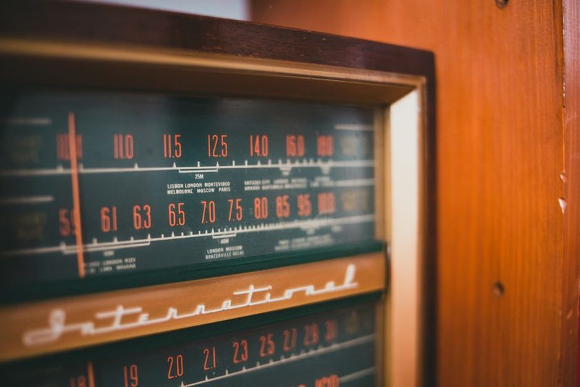

The Forty-Nine Metre Crowd

By eight in the evening the forty-nine metre band stops sounding like a set of individual stations and starts sounding like a single wide signal with several voices arguing inside it. A carrier that was clean and alone at 5960 kHz two hours earlier now has company — a second station riding underneath it, sometimes a third drifting in and out past the edge of the noise. Forty-nine metres, roughly 5900 to 6200 kHz, is the workhorse band of shortwave broadcasting, and workhorse bands get crowded exactly when they become most useful. Finding a signal there after dark is not the hard part. Telling three overlapping signals apart, confidently enough to write one name in the log, is.
Why the Crowd Shows Up on Schedule
The crowding is not random. It tracks the same ionospheric mechanics that make the grayline hour so productive — see The Grayline Window, Twice a Day — as the sun drops, D-layer absorption over the path falls off, and frequencies that sat quiet through the afternoon suddenly start carrying two, three, sometimes four transmitters at once. Forty-nine metres sits inside a narrow allocation, a little over three hundred kilohertz wide, shared by broadcasters across most populated continents. When the ionosphere opens all of those paths within the same hour or two, the stations arrive together, whether or not they were ever meant to share a channel.
On a receiver left in its wide default filter, the effect is a single smeared hiss with a station buried somewhere inside it. Narrow the bandwidth and the picture usually separates into two or three distinct carriers, each fading on its own schedule, each worth its own line in the log if it can be held apart long enough to be sure.
The Half-Hour That Gives You an Anchor
Most reliable identification happens in a narrow window: the few minutes before and after the top of the hour, when interval signals, station IDs, and schedule announcements cluster together. A signal that is an anonymous voice at nineteen minutes past the hour is often unmistakable at the top of it. The habit worth building is a simple refusal — note the frequency and the approximate time the moment something interesting turns up, but hold off writing a station name until the identifying announcement arrives.
A confident log entry isn’t the one written fastest. It’s the one written after the interval signal confirmed what your ear had already guessed.
That patience matters more on forty-nine metres than almost anywhere else on the dial, because the cost of guessing wrong is high. Two stations sharing a frequency segment can sound similar enough, especially through a modest wire antenna, that a rushed entry attributes an entire evening’s listening to the wrong transmitter.
Reading Two Signals as One
A few habits help pull co-channel stations apart without much beyond patience and a working ear.
- Listen for the beat note. Two carriers close in frequency but not identical often produce a faint whistle or warble — a sign that more than one transmitter is present, even before either becomes distinguishable on its own.
- Watch the fade pattern, not just the strength. Each station rides its own path through the ionosphere, so one will often fade up while the other fades down. A signal that keeps changing character is usually two signals trading places.
- Narrow the filter before deciding. A receiver’s default bandwidth is set for comfort, not separation. Tightening it trades a little fidelity for a lot of clarity when a channel is shared.
Frequency alone is not identity
Because forty-nine metres is so heavily used, hearing a station at, say, 6070 kHz on one evening is not proof of who occupied that frequency the evening before. Many broadcasters run parallel transmissions on more than one channel and shift schedules with the season. The frequency narrows the search; only the identifying announcement confirms it.
A Rough Map of the Evening Push
The crowding is not spread evenly across the band’s roughly three hundred kilohertz. Some segments fill earlier and empty later than others, at least across the sessions logged from this desk over the past several weeks.
| Segment (kHz) | Typical local window | What tends to happen | Listening note |
|---|---|---|---|
| 5900–5950 | 17:00–19:00 | Regional signals arrive first, moderate overlap | IDs often cluster near :55, before the crowd thickens |
| 5950–6050 | 19:00–21:00 | Heaviest overlap of the evening | Narrow the filter and wait for the top of the hour |
| 6050–6150 | 20:00–23:00 | Longer-path stations layer in as the ionosphere settles | Fade pattern separates signals better than volume does |
| 6150–6200 | 22:00–01:00 | Traffic thins, one dominant signal is more typical | A good window to confirm an earlier tentative entry |
What the Log Should Say When You’re Not Sure
Some sessions end without a confirmed identification, and that is a legitimate outcome, not a failed evening. A stricter logbook format treats an uncertain catch as its own category rather than rounding it up to a guess — see A Logbook That Lies Less. Writing “unconfirmed — two carriers, stronger signal favored [name]” preserves what was actually heard and leaves room to revisit the entry once a confirmation card arrives or a repeat session settles the question.
It also helps to rule out the receiver before blaming the crowd. A session that sounds unusually muddy is sometimes a noise floor problem rather than genuine co-channel interference — worth checking against Reading the Noise Floor Before You Blame the Radio — because a nearby switching supply or a poor ground can smear a perfectly separable pair of signals into something that sounds like three.
A note on this log
This page describes listening habits observed at one receiver desk across several evening sessions on the forty-nine metre band. It is a record of what helped here, not a claim about how any particular radio, antenna, or location will perform. Propagation varies by night, by season, and by the solar cycle — the only way to know what a given evening holds is to tune in and listen.